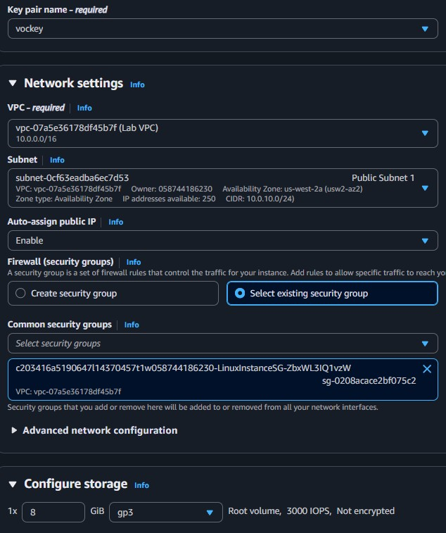
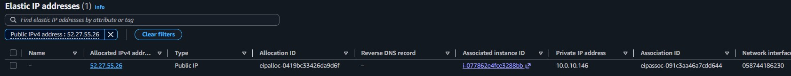
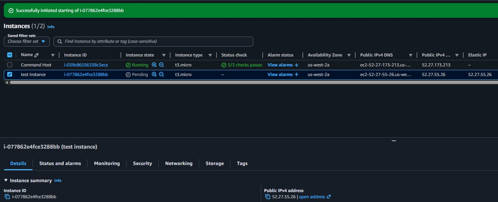

Instance Launch
Created a t3.micro EC2 instance named "test instance" in Public Subnet 1 with an auto-assigned public IP.
This lab investigates a customer scenario where an EC2 instance's public IP changes every time it is stopped and restarted. The solution involves understanding dynamic vs. static addressing and using an Elastic IP to assign a persistent public address.
Launched an EC2 instance with a dynamic public IP, confirmed that the IP changes after stopping and restarting, then allocated an Elastic IP (52.27.55.26) and associated it to the instance. After restarting the instance again, the public IP remained the same, confirming the fix.
Created a t3.micro EC2 instance named "test instance" in Public Subnet 1 with an auto-assigned public IP.
Stopped and restarted the instance. The public IP changed from 35.86.127.200 to 35.91.135.26, confirming the dynamic behavior.
Allocated Elastic IP 52.27.55.26 and associated it to the test instance. After restart, the IP remained unchanged.
Launched a t3.micro instance to replicate the customer's issue. The instance was stopped and restarted multiple times to observe IP behavior before and after applying the Elastic IP.
Allocated a static public IPv4 address from AWS's pool and associated it with the test instance. This ensures the IP persists across stop/start cycles.
Detailed documentation of the troubleshooting and resolution process.

35.86.127.200 and private IPv4: 10.0.10.146.35.91.135.26, a different address. The private IP remained 10.0.10.146.52.27.55.26.
52.27.55.26 (the Elastic IP).52.27.55.26, confirming the Elastic IP is persistent.
This lab demonstrated why services that depend on a fixed IP address break when using the default dynamic public IP assignment. Every time an EC2 instance is stopped and started, AWS releases the old public IP and assigns a new one from its pool.
The solution is to allocate an Elastic IP and associate it with the instance. This gives the instance a permanent public address that survives reboots. For the customer (Bob), this meant his dependent services would no longer break on each restart.